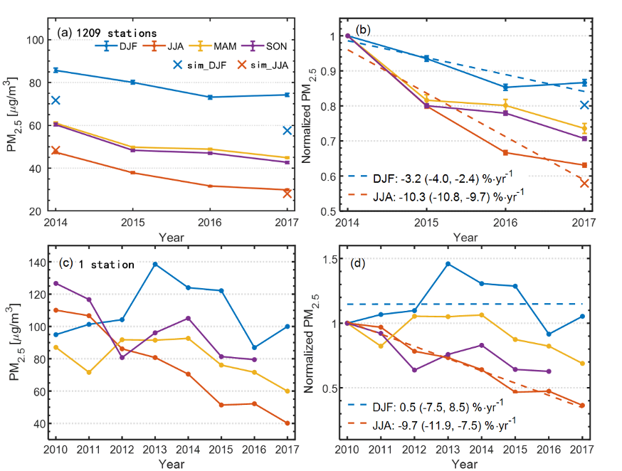
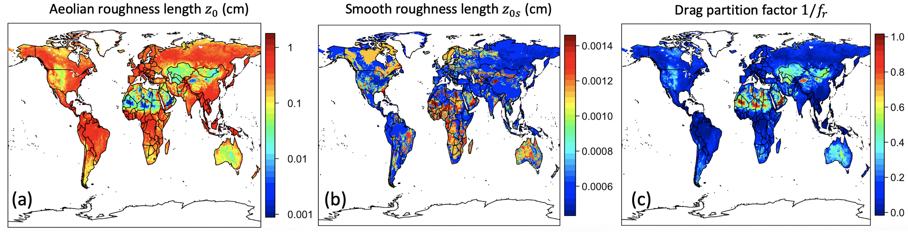

Home • Projects and publications • Teaching resources • Presentations • CV • Google Scholar
Music • Traveling • Languages • Cooking • Jiu-Jitsu
Effects of meteorology and climate change on air quality

Global PM2.5 changes by 2050s due to climate change, estimated from our statistical model. Many regions have higher PM2.5 levels because of higher temperature, leading to faster chemistry, higher biogenic emissions and more fires in the future. Some regions have decreased PM levels because of the volatilization of nitrate and organics under higher temperature.
The variability of air quality is determined by both changes in emissions and meteorology. I investigate how day-to-day changes in local meteorology (e.g., temperature, humidity, rainfall, wind direction) as well as synoptic circulation (e.g., cyclones, monsoons, highs), will impact on global and East Asian air quality, with a focus on fine particulate matter (PM2.5). To achieve this, we use coupled chemistry–climate modeling (e.g., GEOS-Chem, CESM) and multivariate statistical analysis of global observations to examine the importance of meteorology on PM2.5. For example, we showed that over much of East Asia, air quality is determined by the northerly cold advections from the semi-permanent Siberian High as quantified by the principal component analysis (PCA). Our study also shows that the interannual variability of PM2.5 is mostly driven by interannual temperature changes. It follows that global warming will exacerbate future PM2.5 air quality over most of the world. We constructed a statistical model to predict future PM2.5 changes by 2050s due to climate change, and our predictions indicate some increase in PM2.5 up to ~30 μg m-3. We showed that this "climate penalty" effect will partially counteract the air quality improvements by anthropogenic emissions reductions.
References:
• Leung et al., 2018, Atmos. Chem. Phys., 18, 6733-6748. [link]
Effects of human emissions reductions on air quality

Anthropogenic emissions are major sources of PM2.5 and ozone air pollution. In recent years, countries have been curtailing emissions to alleviate air pollution. However, pollutant levels have been dropping in smaller rates (in % yr-1) compared with the rates of emissions reductions, and scientists discover that atmospheric chemistry constitutes several negative feedback mechanisms that lead to retarded air quality improvements. Our study show two chemical mechanisms that hinder air quality improvements over metropolitan regions. First, city clusters with high nitrogen oxides (NOx) level will render ozone production more volatile organic compound (VOC)-limited; under this ozone production regime, NOx emissions reductions enhance both hydroxyl (OH) radical and ozone levels, increasing atmospheric oxidation capacity (AOC) that accelerates secondary PM2.5 formation. Second, ammonia (NH3) preferentially reacts with sulfur dioxide (SO2) over NOx especially over city clusters with SO2:NH3 >> 1. SO2 emissions reductions increase the atmospheric NH3 abundance which lead more NOx to react with NH3, producing more nitrate. Our study shows that these two mechanism are important for the recent buffered PM2.5 decrease especially in the wintertime when SO2:NH3 >> 1 and VOC-limited ozone chemistry are present. The Governments should enact more sophisticated policies to simultaneously curtail emissions and circumvent these negative feedbacks.
References:
• Leung et al., 2020, Geophys. Res. Lett., 47(14), e2020GL087721.[link]
Effects of land-surface characterizations on desert dust emissions
Mineral dust is by mass the dominant aerosol type in the atmosphere, and it influences climate and weather by regulating the radiation budget. However, the physics of dust emission is not very complete in the global climate models (GCMs), affecting the accuracy of dust loading predictions in terms of spatiotemporal variability as well as the associated climate change predictions. Our study focuses on implementing two pieces of missing physics from GCMs. The first one is the physics of winde drag partition due to surface roughness elements. Roughness elements such as vegetation and rocks can dissipate surface wind stress and protect soils from erosion. Another physics is the dust emission intermittency due to high-frequency near-surface turbulence, primarily because turbulence-driven wind fluctuations can sweep across the dust emission threshold and shut off emissions multiple times within a model timestep, leading to the smaller dust fluxes than GCMs predicted. Ignoring these mechanisms may lead to overestimated dust emissions.
